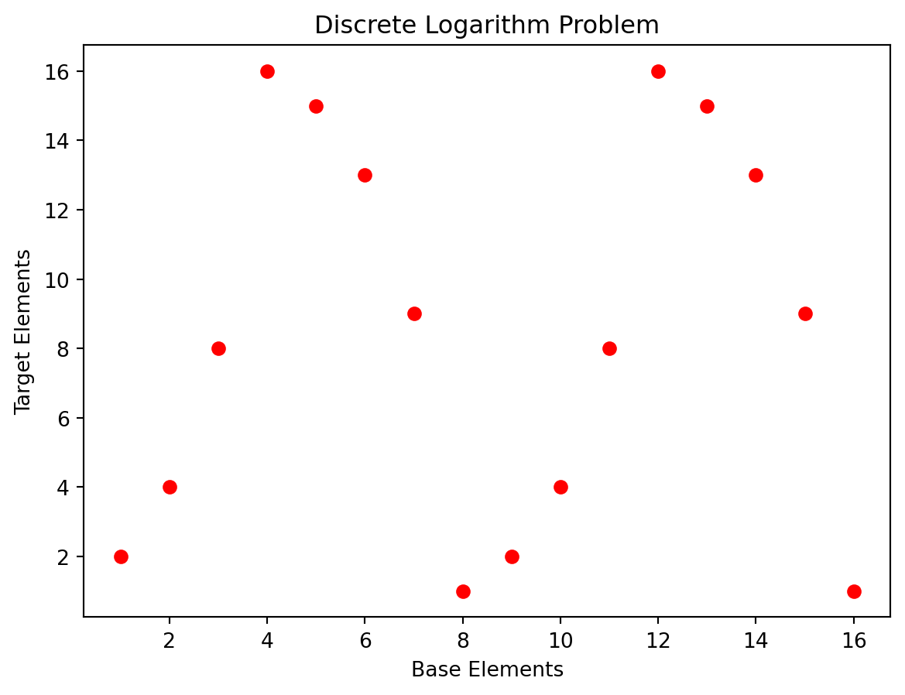

The Discrete Logarithm Problem: A Brief Introduction
The discrete logarithm problem is a fundamental concept in the field of cryptography. It plays a crucial role in many encryption algorithms and serves as the basis for various security protocols. In this blog post, we will explore what the discrete logarithm problem is and why it is significant.
Understanding Logarithms
Before delving into the discrete logarithm problem, let’s quickly recap logarithms. A logarithm is an operation that calculates the exponent to which a particular base must be raised to obtain a given number. In simpler terms, it answers the question: “What power do I need to raise this base to get this number?”
For example, in the equation \(2^x = 8\), the logarithm base 2 of 8 is 3, denoted as \(log_2(8) = 3\). It tells us that 2 raised to the power of 3 equals 8.
The Discrete Logarithm Problem
Now, let’s move on to the discrete logarithm problem. In cryptography, we often deal with mathematical structures known as finite fields. These fields have a finite number of elements and exhibit certain properties that make them suitable for cryptographic operations.
The discrete logarithm problem is defined within a finite field. Given a base element g and a target element h, the problem involves finding an exponent x such that \(g^x = h.\) Mathematically, it can be represented as \(x = log_g(h).\)
The challenge lies in finding the value of x efficiently, especially when the field is very large and calculations become computationally expensive. In other words, the problem is to determine the unknown exponent x based on the known values of g and h.
import matplotlib.pyplot as plt# Define the finite field parametersprime_modulus =17# Modulus value for the finite field# Generate the base and target elements# All integers from 1 to (prime_modulus - 1)base_elements =range(1, prime_modulus) # Calculate the target elements using exponentiationtarget_elements = [pow(2, x, prime_modulus) for x in base_elements] plt.scatter(base_elements, target_elements, color='red', marker='o')plt.xlabel('Base Elements')plt.ylabel('Target Elements')plt.title('Discrete Logarithm Problem')plt.show()

Now, if we consider the plotted graph, with the x-axis representing the base elements and the y-axis representing the target elements, finding the discrete logarithm involves determining the x-coordinate (base element) corresponding to a given y-coordinate (target element).
The challenge arises because, in a finite field, as the field size (p) grows larger, the number of possible base and target elements increases exponentially.
Significance in Cryptography
The discrete logarithm problem forms the foundation of various cryptographic algorithms, particularly those based on public-key cryptography. These algorithms rely on the difficulty of solving the discrete logarithm problem to ensure the security of encrypted data.
One such algorithm is Diffie-Hellman key exchange, which allows two parties to establish a shared secret key over an insecure channel.
Other algorithms, such as DSA (Digital Signature Algorithm) and ElGamal encryption, also depend on the discrete logarithm problem for their security.
Quantum Security
The emergence of quantum computing has significant implications for cryptographic algorithms, including those based on the discrete logarithm problem. Classical computers employ the index calculus algorithm to solve this problem, but it becomes time-consuming as the field size increases. Quantum computers, however, leverage algorithms like Shor’s algorithm, which can efficiently solve the discrete logarithm problem in polynomial time. This poses a challenge to the security of classical cryptographic schemes when faced with a powerful quantum computer.
While there are no quantum computers large enough to break the discrete logarithm problem at the time of writing, it is important to consider the implications of quantum computing on the security of cryptographic algorithms. This is especially true for those that rely on the discrete logarithm problem, such as Diffie-Hellman key exchange and DSA.
Conclusion
In summary, the discrete logarithm problem is a mathematical challenge of finding an unknown exponent within a finite field. Its significance in cryptography cannot be overstated, as it underpins the security of various encryption algorithms and protocols. However, the emergence of quantum computing poses a threat to the security of these algorithms, as quantum computers can efficiently solve the discrete logarithm problem. We should look to develop quantum-resistant cryptographic schemes to ensure the security of our data in the future such as lattice-based cryptography.